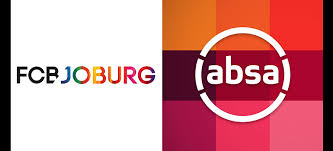
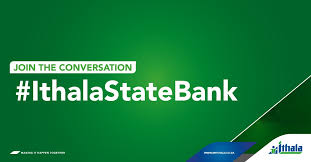
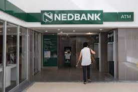

BANKS IN THE MALL
| ABSA |  | Absa Group Limited, and originally Amalgamated Banks of South Africa, is a South African-based financial services group, offering personal and business banking, credit cards, corporate and investment banking, wealth and investment management, as well as bank assurance. |
Customer service: 0860 008 600 |
||
| CAPITEC |  |
Capitec Bank is a South African retail bank. As of August 2017 the bank was the second largest retail bank in South Africa, based on number of customers, with 120,000 customers opening new accounts per month |
CUSTOMER SERVICE:0860 102 043 |
||
| FNB | First National Bank is one of South Africa's "big five" banks. It is a division of FirstRand Limited, a large financial services conglomerate, which trades on the Johannesburg Securities Exchange, under the symbol: FSR. |
CUSTOMER SERVICE:087 575 9404 |
|||
| ITHALA |  | We are one of KwaZulu-Natal's primary drivers of economic development and a strategic enabler of support for, in particular, this province's historically disadvantaged communities. We manage a fully-integrated business that provides a range of financial and property services throughout KZN. |
Tel: +27 (0)31 366 2500 |
Call Centre:+27 (0)80 133 1130 |
Email: clientservicesltd@ithala.co.za |
| NEDBANK |  | Nedbank Group is a financial services group in South Africa offering wholesale and retail banking services as well as insurance, asset management, and wealth management. Nedbank Limited is a wholly owned subsidiary of Nedbank Group. Nedbank's primary market is South Africa. |
Customer service:0860 555 111 |